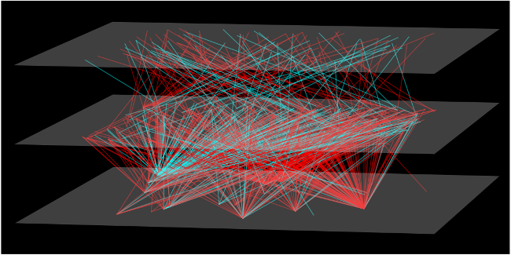
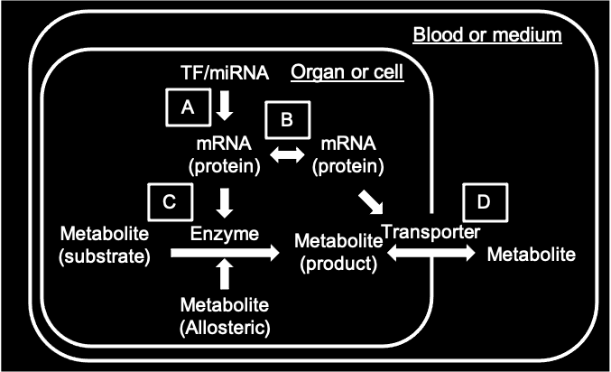

This website is free and open to all users and there is no login requirement.
Select an analysis method

License
Help
If loading bars of interactive networks show 0%, please visit the following URL: https://github.com/WestHealth/pyvis/issues/25
More details and case studies of iTraNet (doi: https://doi.org/10.1101/2023.11.30.569499)